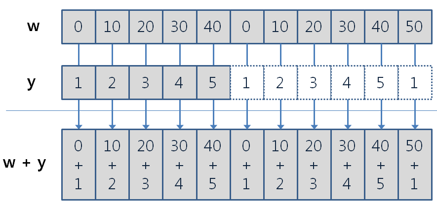

y <- c(2, 4, 6, 8, 10)
y[1] 2 4 6 8 10Last chapter, we reviewed what variables are. Imagine we’re storing heights of 50 students. Declaring 50 variables like “Height1”, “Height2”, …, “Height50” takes forever. Instead, we can use “vector” to store multiple values in a single variable.
Vector is a 1-dimensional sequence of “same type” of data. For example, vector with int can only store int values. Length of Vector is equal to number of values stored in the vector.
y <- c(2, 4, 6, 8, 10)
y[1] 2 4 6 8 10Again, vector must be same data type. For example, if you create one with mix of int and float, all values will be float. Why? because all int can be float by adding “.0” but float cannot be int without losing data. Let’s see an example.
x <- c(1,3,5,7,9.2)
x[1] 1.0 3.0 5.0 7.0 9.2Recall c() meant to “connect.” This means you can connect multiple vectors into one as long as they match data type.
z <- c(x, y)
z [1] 1.0 3.0 5.0 7.0 9.2 2.0 4.0 6.0 8.0 10.0Question: What will happen if we flip the order of element? As you can see below, resulting order of elements in the vector also changes.
z <- c(y, x)
z [1] 2.0 4.0 6.0 8.0 10.0 1.0 3.0 5.0 7.0 9.2Now we learned how to create vectors with number. But what if we want to label something and need 1 to 100? Typing them manually will take some time. Instead, there’s a short cut to create continuous numbers with “:” operator. There there two points to remember when using :.
1:10 [1] 1 2 3 4 5 6 7 8 9 1010:1 [1] 10 9 8 7 6 5 4 3 2 10.2:3[1] 0.2 1.2 2.2What if you want to create vector with different increment? You can use seq() function. It has three main arguments - from, to, by. “from” is where the sequence starts, “to” is where it ends, and “by” is the increment.
seq(1, 10) [1] 1 2 3 4 5 6 7 8 9 10seq(1, 10, by=2)[1] 1 3 5 7 9seq(length=5, from=1, by=2)[1] 1 3 5 7 9If you want to create vector with repeated values, you can use rep() function. It has two main arguments - “x” and “times”. “x” is the value you want to repeat, and “times” is how many times you want to repeat it.
rep(5, times=4)[1] 5 5 5 5x <- seq(0, 40, by = 10)
y <- c(1:5)
x + y[1] 1 12 23 34 45x * y[1] 0 20 60 120 200
z <- c(rep(x, times=2), 50)
z + yWarning in z + y: 두 객체의 길이가 서로 배수관계에 있지 않습니다 [1] 1 12 23 34 45 1 12 23 34 45 51As you can see, addition is performed even though length of two vectors didn’t match. The warning sign is indicating that length’s are not multiple of each other, so it shows what we mean by “recycle until it matches the length.” If it’s difficult to grasp, there’s a visualization below.

There are many functions that can be used with numeric vectors. Here are some of the most commonly used ones. While you might not end up not using them all, try them out and see which ones are useful for you!
| Operation | Discription |
|---|---|
| length(x) | Return length of the vector |
| sum(x) | Return sum of all elements in the vector |
| mean(x) | Return average of all elements |
| median(x) | Return median of all elements |
| var(x) | Return variance of all elements |
| sd(x) | Return standard deviation of all elements |
| max(x) min(x) range(x) |
Return highest number in the vector Return lowest number in the vector Return the range (highest and lowest) number |
| rank(x) | Return the “ranking” of each element from smallest to biggest |
| sort(x) | Reorganize vector from smallest to biggest elements |
| order(x) | Return index of smallest to biggest element’s location |
| which.max(x) which.min(x) |
Return the highest number’s index Return the lowest number’s index |
| which(x) | Return index of whatever element that satisfies the condition |
rank/sort/order can be confusing, so here’s the example.
x <- c(11,14,12,13,15)
x[1] 11 14 12 13 15# Rank returns the ranking of each element in entire vector
rank(x)[1] 1 4 2 3 5# Order returns Where the element is located in the original vector if we sorted it
order(x)[1] 1 3 4 2 5# Sort returns the vector sorted from smallest to biggest
sort(x)[1] 11 12 13 14 15Just like numeric vectors, you can create vectors with Boolean values (TRUE/FALSE). You can use c() function to create them. You can use T/F instead too.
booleanvec <- c(TRUE, FALSE, TRUE, TRUE, FALSE)
booleanvec[1] TRUE FALSE TRUE TRUE FALSESpecial point about the Boolean vectors is that you can use logical operators to create vectors. Let’s say you want to know which students scored higher than 60 on their final.
scores <- c(55, 70, 65, 40, 90)
passed <- scores > 60
passed[1] FALSE TRUE TRUE FALSE TRUEWhile it’s not literally a boolean logic, there are some functions that can be useful when working with Boolean vectors: any/all/if/else
any() statement returns TRUE if at least one element in the vector is TRUE.
any(passed)[1] TRUEall() statement returns TRUE only if all elements in the vector are TRUE.
all(passed)[1] FALSEif and else statements are fundemental for all programming languages. They allow you to control the flow of your program based on conditions. However, we’ll discuss about it briefly here since other contents are heavy as well. If you want to learn more about it, let me know anytime.
if statement returns true when the condition is met. It’s like a gateway before executing next code. “Do if condition is met? Then move to next line of code. If not, then skip to else statement (or end the if statement).”
else statement is executed when the if condition is not met. It’s like the alternative path when the if condition fails.
Both if and else statements are wrapped around {}.
Here’s the example:
Iftest <- c(1,3,5,7,9)
if (any(Iftest > 5))
{
print("At least one element is greater than 5")
} else
{
print("No elements are greater than 5")
}[1] "At least one element is greater than 5"For readability, R allows you to combine ifelse into a single line. It looks like this: ifelse(Condition, Value if TRUE, Value if FALSE)
ifelse(any(Iftest > 5), "At least one element is greater than 5", "No elements are greater than 5")[1] "At least one element is greater than 5"Just like other two types, this is just vector with a sequence of text values. You can create them using c() function.
names <- c("Banana", "Apple", "Carrot", "Grape", "Whatelse")
names[1] "Banana" "Apple" "Carrot" "Grape" "Whatelse"Unlike numbers, you can’t add or subtract texts. So there’s other ways to handle manipulation of text vectors.
First, we should check if all elements are text, as vector require everything to be same type. But in huge data set, it might be tough to manually check everything. So we have “.ascharacter()” function to convert everything into text.
mixedvec <- c("Apple", 2, "Banana", 4.5, TRUE)
mixedvec <- as.character(mixedvec)
mixedvec[1] "Apple" "2" "Banana" "4.5" "TRUE" Try code by yourself. Did you notice that all inputs are as text when they were originally text, int, float, bool?
Now, let’s look at how we can combine and split text vectors like addition/substraction. Both cases, they follow same element wise operation and recycle rule like numeric vectors.
For combining text vectors, we can use paste() function. If you want to add space between combined texts, use sep=” ” argument. One point is that you can paste how many vectors you want, but you can call sep =” ” one once per line. So if you want to have different seperators between multiple vectors, you’ll need to call paste() multiple times. So it’ll look like this:
names <- c("Banana", "Apple", "Carrot", "Grape", "Whatelse")
price <- c("1.00", "2.50", "0.75")
combined <- paste(names, price, sep=": $") #Combine name and price with ": $" in between
combined #Do you notice recycling rule here?[1] "Banana: $1.00" "Apple: $2.50" "Carrot: $0.75" "Grape: $1.00"
[5] "Whatelse: $2.50"For spliting text vectors, we can use strsplit() function. When you split, you use split=” ” argument to specify where to split.
splitnames <- strsplit(combined, split=": ")
splitnames #Name and price are seperated using ":" as the split point[[1]]
[1] "Banana" "$1.00"
[[2]]
[1] "Apple" "$2.50"
[[3]]
[1] "Carrot" "$0.75"
[[4]]
[1] "Grape" "$1.00"
[[5]]
[1] "Whatelse" "$2.50" There are many other functions that’s helpful with handling vectors. However, due to it’s amount, we’ll mention only few that’s commonly used.
| Opertiona | Description |
|---|---|
| nchar(x) | Return character counts of each elements in the vector x. *Literally all characters, including space, are counted! |
| substr(x, start, stop) | Return character counts of each element in the vector x, starting from ’start’th character to the ’stop’th character. |
| grep(target, x, ignore.case=T, fixed=T) | Return the index of element in vector x that contains “target”. ignore.case asks if you want grep() to be case sensitive (T as yes). fixed asks if you want to use Regex (We don’t be discussing about this here. Keep it true) |
| sub(target, replacement, x, ignore.case=T, fixed=T) | If any element in vector x contains “target,” replace it to “replacement.” |
| toupper(x) tolower(x) |
change all characters in the vector x into upper/lower case |
Earlier, we said there’s a special data types. During data analysis, handling these becomes essential as we don’t know how data that doesn’t align with your dataset will influence the general trend (hence analysis result). So let’s briefly look at how to create vectors with these special data types, especially Na and NaN.
NA is used to represent missing values with undetermined data type. For example, if you’re collecting final exam scores but completely missed one student’s score, you can use NA to represent it.
How we do process NA without manually checking all data? We can use is.na() and na.omit() functions. is.na() checks if there is NA values, and na.omit() removes all NA values from the vector.
scores <- c(90, 85, NA, 70, 95, NA, 80)
is.na(scores) #It'll return TRUE if there's NA in the vector[1] FALSE FALSE TRUE FALSE FALSE TRUE FALSEscores <- na.omit(scores) #It'll remove all NA
scores[1] 90 85 70 95 80
attr(,"na.action")
[1] 3 6
attr(,"class")
[1] "omit"Look at the output of na.omit(). Second/Fourth line - attr() shows what type of work is by the code. Ignore them First line - Vector after removing NA values Third line - Attribute showing which index values were removed due to NA Fifth line - What’s done by the code (removing NA values)
However, using is.na() and na.omit() everytime can be time-consuming in big dataset. How can we “ignore” them without removing them? Many functions in R have “na.rm” argument. Setting na.rm=T will ignore NA values during calculation.
scores <- c(90, 85, NA, 70, 95, NA, 80)
mean(scores, na.rm=T) #Calculate mean while ignoring NA values[1] 84NaN is used to represent mathematically undefined values. For example, if you try to divide 0 by 0, the result is undefined even thought we know that data type is numbers. In this case, R will return NaN. Just like NA, we can use is.nan() function to check if there’s NaN values in the vector. To know if vector actually contains NaN, you must use is.nan() because is.na() will return TRUE for both NA and NaN.
I mentioned “index” multiple times before, and you probably grasped somewhat sense of what it is. Index is a location of element in the vector. In R, index starts from 1 (not 0 like other programming languages). You can use index to call specific elements in the vector by indicating interested index in []. Here’s the example:
x <- c(10, 20, 30, 40, 50)
x[3] #Call the 3rd element in the vector x[1] 30But one thing to be careful is that you cannot call two indicies at once. Try x[3,5] and see if it works.
Instead, you can use c() to connect multiple indices.
x <- c(10, 20, 30, 40, 50)
x[c(2,4)] #Call 2nd and 4th elements in the vector x[1] 20 40